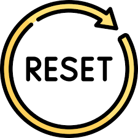

Select Station - اختر محطة
Sawt AlShabab
Sham FM
Ninar FM
Almadina FM
Arabesque FM
Farah FM
Fuse FM
Nojoom FM
Rozana FM
Live Radio
Sham FM, 92.3 FM, Dimashq, Syria
please wait .. or try another station
×
volume - الصوت
speed - السرعة
